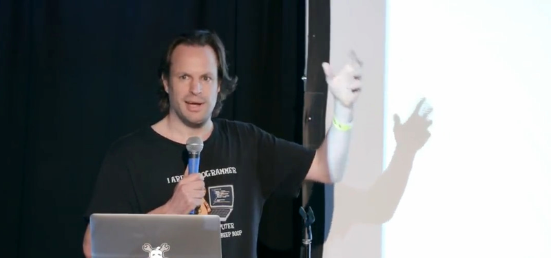
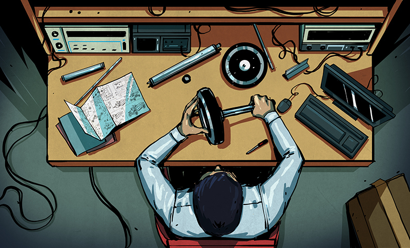
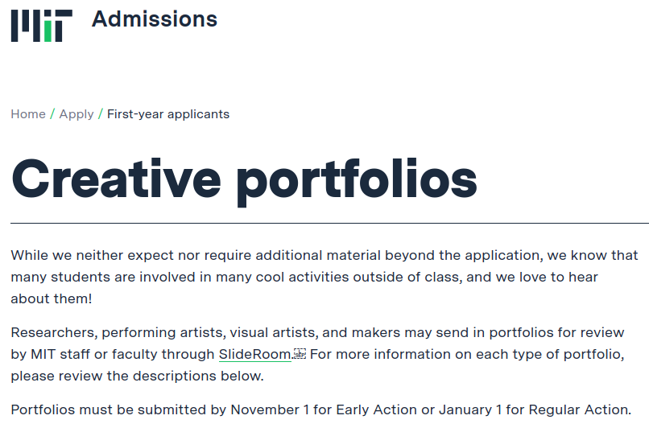
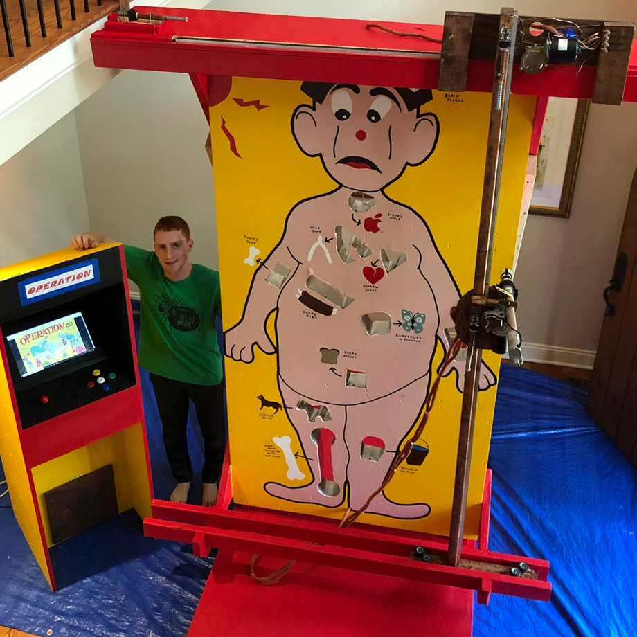
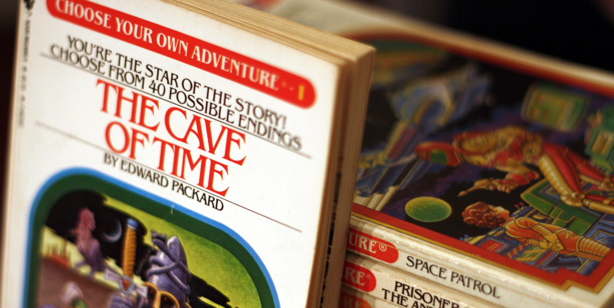
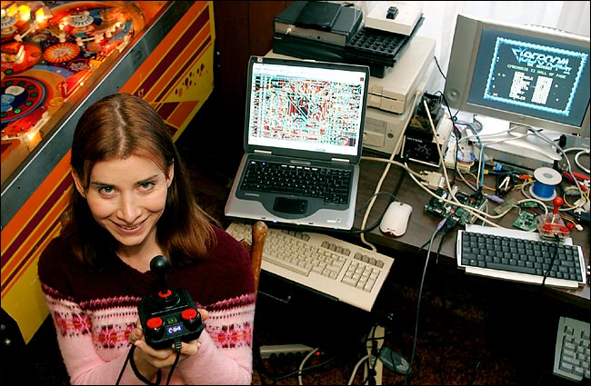

The World is Hiring Hackers
Why a Personal Journey of Discovery Has a Place on the Modern Engineer's Resume
Mike Szczys
Editor in Chief
Hackaday.com // Hackaday.io
@szczys
Hackaday.com is our Editorial Voice
Hackaday.io is our Community Platform
Hacker
| ha-kər | noun
a person who uses things in a way that was not originally intended
Sprite_TM
Jeroen Domburg
ESP8266 -- MCU with WiFi for around $3
https://github.com/Spritetm/esphttpd
Software Engineering /
Technical Marketing Manager
Well, Of Course!
(Eureka moments are always obvious after the fact)
The Old Way of Becoming an Engineer
The Old Ways
- Acquire a University Degree
- Land a Job with Strict Dress Code
- Spend Your Life With One Company
The World Has Changed
The New Era 
- Few Single-Employer Careers
- Few Single-Career Careers
- World Changes During 4-Year-University
Role of University:
Teach You How to Learn
You must augment your
education with self-guided learning
Choose Your Own Adventure University:

Zach Fredin (@zakqwy)
https://hackaday.io/project/34160-cyborg-ring
https://hackaday.io/project/3339-neurobytes
Portfolios: https://mitadmissions.org/apply/firstyear/portfolios-additional-material/
Research Assistant: MIT Center for Bits and Atoms
https://hackaday.com/?p=217544
Joshua Vasquez (@Poofjunior)
https://www.youtube.com/watch?v=yCwlqF1J5I8
Graduate Student Researcher at University of Washington's Machine Agency Lab
2018 New York Maker Faire

2019 Philadelphia Maker Faire
Ben and Jonathan - College Bound
www.spotechnology.com
Choose Your Own Adventure Career:

Image by Derek Bruff CC-BY-NC https://www.flickr.com/photos/derekbruff/6373811675
Moritz Walter
https://hackaday.com/2016/08/29/how-accurate-is-microstepping-really/
Integration Engineer at Form Labs
Arsenio Dev
https://www.youtube.com/watch?v=lp4mH3qZfFs
Student Researcher; Science Systems and Applications
https://hackaday.io/project/1742-arduino-rocket-stabilization-system-ud-71417/log/52743-prograde-burn-i-quit-my-day-job-to-work-at-nasa
Jeri Ellsworth
https://www.youtube.com/watch?v=lp4mH3qZfFs
Image: Alan S. Weiner for The New York Times
"C64 Direct-to-TV"
Founder of Tilt5
“I worked on X”
But who gets to actually
see the work?
Open Source has changed the world yet we've only just begun.
"The open policy, the open door – I think that was one of the greatest things NASA ever accomplished".
-Ed Buckbee NASA public affairs officer during Apollo
Mike Szczys
Editor in Chief
Hackaday.com // Hackaday.io
@szczys